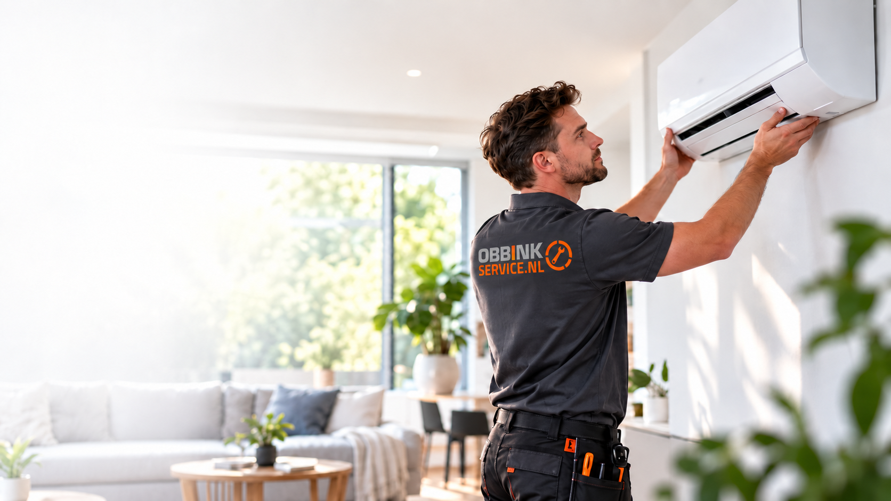

Service • Installatie • Advies
Techniek die werkt.
Service die blijft.
Obbink Service helpt thuis en zakelijk met reparatie, installatie, airco, wifi, energieopslag, professioneel witgoed en beeld & geluid. Van eerste advies tot oplevering en service.
Technische service sinds 1934
Waar kunnen wij u mee helpen?
Wij garantie-reparaties uitvoeren voor veel grote A-merken?
Je bij Obbink terechtkunt voor advies, aankoop, installatie, reparatie én onderhoud?
We in de Achterhoek 9 winkels en een eigen Service Center hebben?
Obbink al sinds 1934 met techniek en service bezig is?

Airco nodig?
Installatie, onderhoud en service door Obbink Service.
STEK-gecertificeerdMeer dan reparatie
Waar kunnen wij u mee helpen?
Obbink Service is de technische voordeur voor oplossingen die verder gaan dan alleen een product verkopen. Kies een onderwerp en ontdek wat we voor u kunnen doen.
Werken bij Obbink Service is nooit saai


Elke dag iets anders. Elke dag iets leren.
Techniek staat nooit stil. De apparaten die we repareren veranderen, en wij groeien mee. Bij Obbink Service blijf je ontdekken, leer je in de praktijk en bouw je aan je vakmanschap.
Leren én verdienen. Ook als student kun je bij ons beginnen: volg een opleiding, doe praktijkervaring op en krijg betaald terwijl je het vak leert.
Zit jij liever niet de hele dag achter een bureau? Werk je graag met je handen en wil je iets maken waar je trots op kunt zijn? Bij ons komen techniek, service en jouw ontwikkeling samen.
Maak werk van jouw toekomst bij Obbink Service. Ontdek hoe jij kunt groeien in een vak dat elke dag iets nieuws brengt.
Ontdek werken bij Obbink Service
Service en winkel slim verbonden
Advies bij Obbink Service. Prijs en voorraad bij Obbink.
Op onze oplossingspagina’s tonen we relevante producten en modellen. Voor actuele prijzen, voorraad en direct bestellen gaat u door naar de Obbink-webshop. Zo blijft er één plek waar commerciële productinformatie actueel is.
Reparatie & service
Een goede reparatie begint met de juiste informatie.
Daarom past ons serviceformulier zich aan uw apparaat en merk aan. U krijgt alleen de vragen die voor uw reparatie relevant zijn. Bij Bosch en Siemens vragen we bijvoorbeeld om het E-Nr. en FD-nummer. U kunt ook eenvoudig een foto van het typeplaatje toevoegen. Zo kunnen wij uw aanvraag beter voorbereiden en is de kans groter dat onze monteur direct met de juiste informatie en onderdelen op pad gaat.
Meld uw reparatie eenvoudig online bij ons aan.
Zo zien wij direct het juiste type- en serienummer en, waar van toepassing, het FD-nummer.
We controleren de gegevens en nemen zo snel mogelijk contact met u op over het vervolg.
Service aanvragen
Vertel ons wat er aan de hand is.
Hoe vollediger uw aanvraag, hoe beter wij ons kunnen voorbereiden. Vul uw contact- en adresgegevens in, geef aan om welk apparaat het gaat en voeg indien mogelijk een foto van het typeplaatje of de storing toe.
Dan vragen we om het E-Nr. en FD-nummer. Daarmee kunnen we het exacte apparaat beter identificeren. Een duidelijke foto van het typeplaatje mag ook.
Obbink Zakelijk
Eén ingang voor bedrijven, organisaties en zorginstellingen.
Zakelijke aanvragen worden gericht uitgevraagd op organisatie, locatie, contactpersoon, type aanvraag en dienst. Daarmee kunnen we later automatisch naar de juiste medewerker of servicegroep routeren.
Zakelijke aanvraag starten- Zorginstelling → Miele Professional → storing
- Bedrijf → wifi/netwerk → offerte
- Horeca → beeld & geluid → projectadvies
- Organisatie → airco → opname en installatie
Organisatie
Ontdek de organisatie achter onze service.
Lees meer over Obbink Service, onze servicebeloften, onze maatschappelijke en lokale betrokkenheid en werken bij onze technische organisatie.